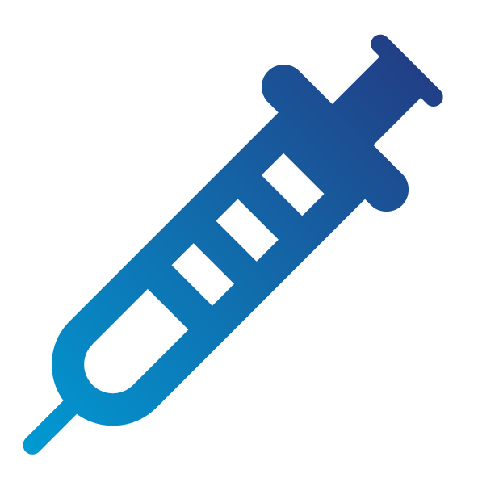

A01 - Broken Access Control

Source: https://owasp.org/Top10/A01_2021-Broken_Access_Control/
|
Description of Broken Access Control:
Access control enforces policy such that users cannot act outside of their intended permissions.
Failures typically lead to unauthorized information disclosure, modification,
or destruction of all data or performing a business function outside the user's limits.
Common access control vulnerabilities include violation of the principle of least privilege or deny by default,
bypassing access control checks by modifying the URL, permitting viewing or editing someone else's account, etc.
Access control is only effective in trusted server-side code or server-less API,
where the attacker cannot modify the access control check or metadata.
https://owasp.org/Top10/A01_2021-Broken_Access_Control/
|
A02 - Cryptographic Failures

Source: https://owasp.org/Top10/A02_2021-Cryptographic_Failures/
|
Description of Cryptographic Failures:
The first thing is to determine the protection needs of data in transit and at rest.
For example, passwords, credit card numbers, health records, personal information,
and business secrets require extra protection, mainly if that data falls under privacy laws or regulations.
For all such data is any data transmitted in clear text, are any old or weak cryptographic algorithms or protocols,
are default crypto keys in use, weak crypto keys generated or re-used, is encryption not enforced, etc?
At a minimum identify which data is sensitive, don't store sensitive data unnecessarily, encrypt all sensitive data at rest,
ensure up-to-date and strong standard algorithms, protocols, and keys are in place, encrypt all data in transit with secure protocols, etc.
https://owasp.org/Top10/A02_2021-Cryptographic_Failures/
|
A03 - Injection

Source: https://owasp.org/Top10/A03_2021-Injection/
|
Description of Injection:
An application is vulnerable to attack when User-supplied data is not validated, filtered, or sanitized by the application,
dynamic queries or non-parameterized calls without context-aware escaping are used directly in the interpreter,
hostile data is directly used or concatenated, etc.
Some of the more common injections are SQL, NoSQL, OS command, Object Relational Mapping (ORM), LDAP,
and Expression Language (EL) or Object Graph Navigation Library (OGNL) injection.
Preventing injection requires keeping data separate from commands and queries. The preferred option is to use a safe API,
use positive server-side input validation, escape special characters, etc.
https://owasp.org/Top10/A03_2021-Injection/
|
A04 - Insecure Design

Source: https://owasp.org/Top10/A04_2021-Insecure_Design/
|
Description of Insecure Design:
Insecure design is a broad category representing different weaknesses, expressed as “missing or ineffective control design”.
One of the factors that contribute to insecure design is the lack of business risk profiling inherent in the software or system being developed,
and thus the failure to determine what level of security design is required.
Secure design is a culture and methodology that constantly evaluates threats and ensures that code is robustly designed
and tested to prevent known attack methods.
Secure software requires a secure development lifecycle, some form of secure design pattern, paved road methodology,
secured component library, tooling, and threat modeling.
https://owasp.org/Top10/A04_2021-Insecure_Design/
|
A05 - Security Misconfiguration

Source: https://owasp.org/Top10/A05_2021-Security_Misconfiguration/
|
Description of Security Misconfiguration:
The application might be vulnerable if the application is missing appropriate security hardening, unnecessary features are enabled or installed,
default accounts and their passwords are still enabled and unchanged, the latest security features are disabled or not configured securely,
the server does not send security headers or directives, the software is out of date or vulnerable, etc.
Without a concerted, repeatable application security configuration process, systems are at a higher risk.
Secure installation processes should be implemented, including a repeatable hardening process makes it fast and easy to deploy another environment
that is appropriately locked down, a minimal platform without any unnecessary features, components, documentation, and samples
a segmented application architecture provides effective and secure separation between components or tenants, etc.
https://owasp.org/Top10/A05_2021-Security_Misconfiguration/
|
A06 - Vulnerable and Outdated Components
Source: https://owasp.org/Top10/A06_2021-Vulnerable_and_Outdated_Components/
|
Description of Vulnerable and Outdated Components:
You are likely vulnerable if you do not know the versions of all components you use (both client-side and server-side),
if the software is vulnerable, unsupported, or out of date, if you do not scan for vulnerabilities regularly,
if you do not fix or upgrade the underlying platform, etc.
There should be a patch management process in place to Remove unused dependencies, unnecessary features, components, files, and documentation,
continuously inventory the versions of both client-side and server-side components, Only obtain components from official sources over secure links, etc.
Every organization must ensure an ongoing plan for monitoring, triaging,
and applying updates or configuration changes for the lifetime of the application or portfolio.
https://owasp.org/Top10/A06_2021-Vulnerable_and_Outdated_Components/
|
A07 - Identification and Authentication Failures

Source: https://owasp.org/Top10/A07_2021-Identification_and_Authentication_Failures/
|
Description of Identification and Authentication Failures:
Confirmation of the user's identity, authentication, and session management is critical to protect against authentication-related attacks.
There may be authentication weaknesses if the application permits automated attacks such as credential stuffing,
where the attacker has a list of valid usernames and passwords, permits brute force or other automated attacks, permits default, weak, or well-known passwords,
uses plain text, encrypted, or weakly hashed passwords data stores, has missing or ineffective multi-factor authentication,
exposes session identifier in the URL, etc.
Where possible, implement multi-factor authentication to prevent automated credential stuffing, brute force, and stolen credential reuse attacks,
do not ship or deploy with any default credentials, particularly for admin users, implement weak password checks, limit or increasingly delay failed login attempts,
Use a server-side, secure, built-in session manager that generates a new random session ID with high entropy after login, etc.
https://owasp.org/Top10/A07_2021-Identification_and_Authentication_Failures/
|
A08 - Software and Data Integrity Failures

Source: https://owasp.org/Top10/A08_2021-Software_and_Data_Integrity_Failures/
|
Description of Software and Data Integrity Failures:
Software and data integrity failures relate to code and infrastructure that does not protect against integrity violations.
An example of this is where an application relies upon plugins, libraries, or modules from untrusted sources, repositories, and content delivery networks (CDNs).
An insecure CI/CD pipeline can introduce the potential for unauthorized access, malicious code, or system compromise.
Many applications now include auto-update functionality, where updates are downloaded without sufficient integrity verification and
applied to the previously trusted application. Attackers could potentially upload their own updates to be distributed and run on all installations.
Another example is where objects or data are encoded or serialized into a structure that an attacker can see and modify is vulnerable to insecure deserialization.
Use digital signatures or similar mechanisms to verify the software or data is from the expected source and has not been altered,
ensure libraries and dependencies, such as npm or Maven, are consuming trusted repositories,
ensure that there is a review process for code and configuration changes to minimize the chance that malicious code or
configuration could be introduced into your software pipeline, etc.
https://owasp.org/Top10/A08_2021-Software_and_Data_Integrity_Failures/
|
A09 - Security Logging and Monitoring Failures

Source: https://owasp.org/Top10/A09_2021-Security_Logging_and_Monitoring_Failures/
|
Description of Security Logging and Monitoring Failures:
This category is to help detect, escalate, and respond to active breaches. Without logging and monitoring, breaches cannot be detected.
Insufficient logging, detection, monitoring, and active response occurs any time Auditable events, such as logins, failed logins,
and high-value transactions, are not logged, warnings and errors generate no, inadequate, or unclear log messages,
logs of applications and APIs are not monitored for suspicious activity, logs are only stored locally, etc.
Developers should Ensure all login, access control, and server-side input validation failures can be logged with sufficient user context
to identify suspicious or malicious accounts and held for enough time to allow delayed forensic analysis,
ensure that logs are generated in a format that log management solutions can easily consume,
ensure high-value transactions have an audit trail with integrity controls to prevent tampering or deletion, etc.
https://owasp.org/Top10/A09_2021-Security_Logging_and_Monitoring_Failures/
|
A10 - Server-Side Request Forgery (SSRF)
Source: https://owasp.org/Top10/A10_2021-Server-Side_Request_Forgery_%28SSRF%29/
|
Description of Server-Side Request Forgery (SSRF):
SSRF flaws occur whenever a web application is fetching a remote resource without validating the user-supplied URL.
It allows an attacker to coerce the application to send a crafted request to an unexpected destination,
even when protected by a firewall, VPN, or another type of network access control list (ACL).
As modern web applications provide end-users with convenient features, fetching a URL becomes a common scenario.
As a result, the incidence of SSRF is increasing.
Also, the severity of SSRF is becoming higher due to cloud services and the complexity of architectures.
Developers can prevent SSRF by segmenting remote resource access functionality in separate networks to reduce the impact of SSRF,
enforce “deny by default” firewall policies or network access control rules to block all but essential intranet traffic,
sanitize and validate all client-supplied input data, enforce the URL schema, port, and destination with a positive allow list,
do not send raw responses to clients, disable HTTP redirections, etc.
https://owasp.org/Top10/A10_2021-Server-Side_Request_Forgery_%28SSRF%29/
|